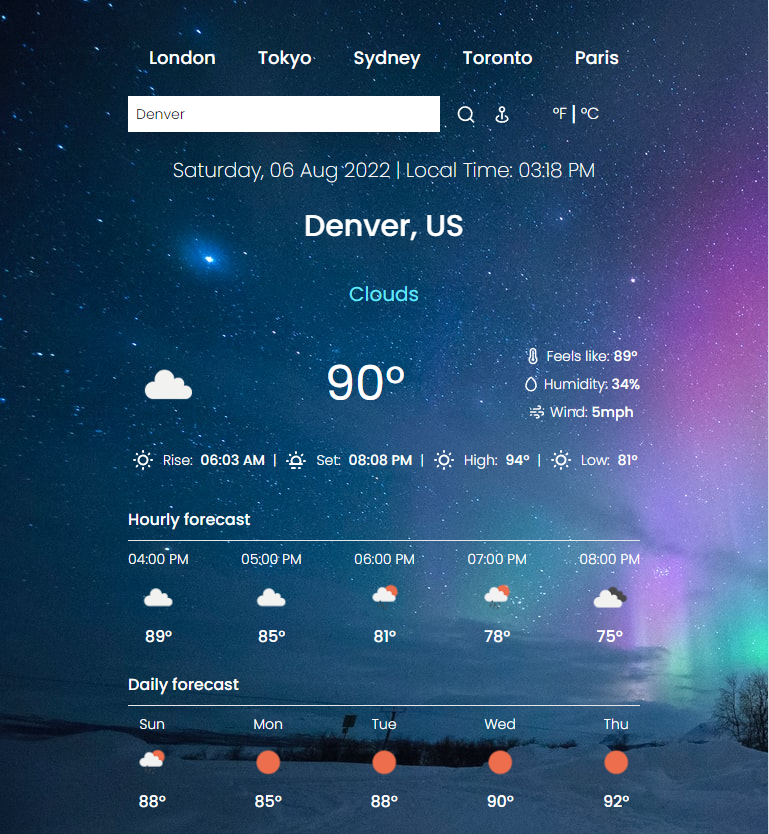

Intro

I am a recent graduate with an AAS in Programming from Volunteer State Community College in Gallatin, TN. I have experience in Python, C++, C#, ASP.net, JAVA, SQL, and others. You can check out some of my projects and work experience here.
I have a passion for all things technology and programming, as reflected in my body of work so far. I enjoy learning what makes things work and have a deep interest in using existing tools in new and unique ways.
Work
A collection of some of my projects througout my time programming.

A React JS site that uses Openweathermap's free API to return the current conditions, hourly, and daily forecast to the user.
Created with the Tailwind CSS framework, along with images from Unsplash, and Toastify for card alerts.

A 90s themed library app that utilizes flex elements to store and display a running list of books in a reader's library.
Primarily a project to show off some CSS animations, but also as a deeper understanding of Javascript of responsive design.

An in-broswer synth that can be played using your keyboard on desktop, or simply tapped in landscape mode on mobile devices. A project
built to challenge my knowledge of HTML/CSS as well as Javascript.

A Pygame-built version of Flappy Bird that utilizes the NEAT algorithm to train birds to not hit pipes in the game.

Utility that loads ten pages worth of job data for the user. Uses BeautifulSoup to parse the HTML and outputs to a CSV file.

A little utility that can show the wifi addresses and passwords for the device it runs on.

A Space Invaders-like game built using pygame. Built as an entry point to programming small games in python.
About
My name is Zach Coombs and I am an avid rock climber and adventurer with an insatiable appetite for all things technology and programming.
Contact
Email: zachdcoombs@gmail.com
Phone: (423) 723-4602